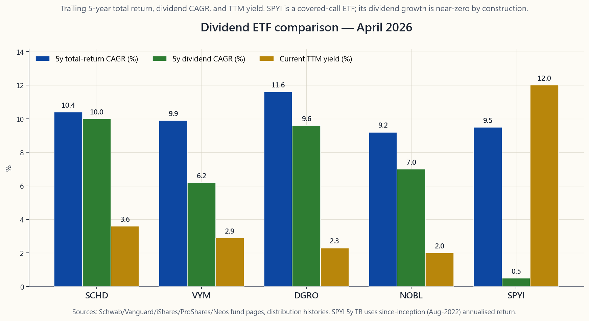
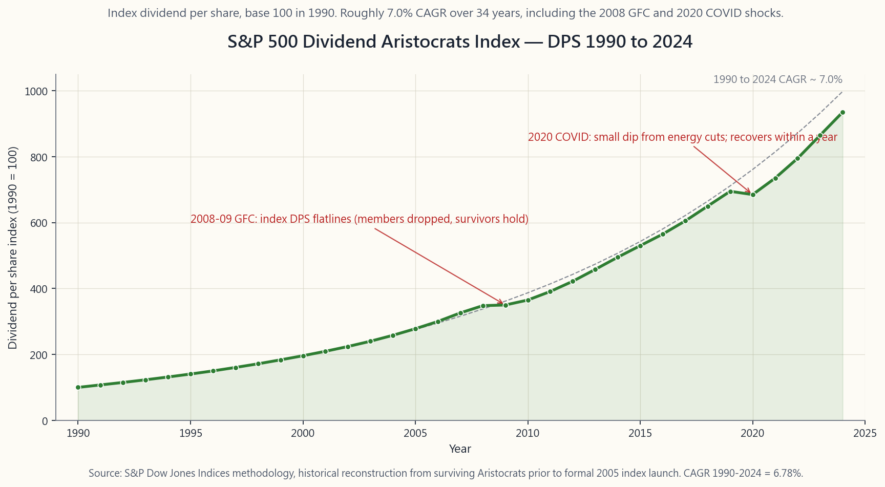

Side Lesson 10: Dividends — Qualified vs Ordinary, Dividend Growth, and the SCHD/VYM/DGRO Landscape
1. Why This Is Important
Dividends are one of those topics where the folk-wisdom and the math disagree, loudly. Over the long run roughly 30-40% of the S&P 500's total return has come from reinvested dividends; once you compound the reinvestment, the figure climbs above 80% of cumulative terminal wealth from the 1930 base. That is a large slice of equity returns to hand-wave through. At the same time, an academic in any decent finance department will tell you that — in a frictionless world — the choice between paying a dividend and retaining the cash is irrelevant, because you can replicate either one by selling shares or reinvesting. Both statements are simultaneously true. The job of this lesson is to live inside that tension without pretending it is not there.
Four reasons to take dividends seriously even after you have read Modigliani-Miller:
at 15% is materially better than an ordinary dividend taxed at 32% plus 5% state. Modigliani-Miller assumed no taxes; you live in a world that has them. Where a payment lands on the IRS's two parallel rate schedules changes the after-tax cash flow by hundreds of basis points per year.
stock that has raised its payment 25 years in a row had to grow earnings to support it. The Aristocrats list and the funds tracking it (NOBL, SCHD, DGRO) lean toward profitable, low-leverage, low-beta names. The yield is the by-product; the discipline is the feature.
Friday cannot live on "the math says you can sell 4% per year." A distribution that arrives in cash without an active sell decision is, for many retail investors, the difference between staying invested through a 30% drawdown and capitulating at the bottom. That preference is not irrational; it is just not in the textbook. The old line — *the market can stay irrational longer than you can stay solvent* — applies to the investor too.
crossed $70B in AUM by 2025, with VYM, DGRO, and NOBL adding another ~$120B between them. This is one of the largest single strategy categories in the ETF market. Knowing how the four canonical funds differ — SCHD's quality screen, VYM's market-cap-weighted yield, DGRO's growth-rate filter, NOBL's 25-year streak — is part of being literate in the income sleeve of a four-tranche portfolio.

This lesson is the operating manual for the income tranche — the Income slot in the four-tranche stack. You will not learn whether dividends are "good" or "bad"; that is the wrong question. You will learn which payments qualify for the lower schedule, what dividend growth actually buys you, how to tell the canonical ETFs apart, and where the math really does say "irrelevant" versus where the IRS code says "actually, that costs you 17 points."
The interactive panel on the website lets you set a starting yield, a dividend-growth rate, a holding horizon, and a federal bracket. It returns the yield-on-cost at year N, the cumulative dividends collected, and the after-tax cash. Use it after you finish the prose.
2. What You Need to Know
2.1 Qualified vs Ordinary — The 60-Day Holding Window
A dividend is qualified — and therefore taxed at the preferential long-term capital-gains schedule (0%, 15%, or 20%, plus the 3.8% NIIT above $200k single / $250k MFJ) — when all three of the following hold:
corporation** (treaty country, or trades on an established US exchange via ADR).
121-day window centred on the ex-dividend date** (so the stock must be in your account for at least 61 days inside that 121-day block).
or a synthetic short during the holding window. (Constructive sale rules under IRC §1259; the IRS counts a hedged long as not "really" held.)
A dividend that fails any of those tests is ordinary and is taxed at your regular wage rate — up to 37% federal plus state plus NIIT, i.e. as much as 44.6%. The biggest ordinary-bucket sources are:
- REIT distributions (most of them; the 199A 20% qualified
- MLP distributions (mostly return-of-capital, with the rest
- Foreign companies not traded on a US exchange (if you bought
- Bond ETFs paying "dividends" (these are interest payments
- Money-market and HYSA "dividends" (interest).
2.2 The 2026 Rate Stack
Two parallel schedules, applied to the same dollar of investment income depending on which bucket it falls in.
Ordinary schedule (wages, interest, REIT distributions, non-qualified dividends, short-term capital gains; 2026 single filer):
| Bracket | Taxable income |
|---|---|
| 12% | $12,150 - $50,400 |
| 22% | $50,400 - $107,825 |
| 24% | $107,825 - $206,000 |
| 32% | $206,000 - $262,000 |
| 35% | $262,000 - $657,000 |
| 37% | above $657,000 |
LTCG / qualified-dividend schedule:
| Rate | Taxable income (single) |
|---|---|
| 0% | up to $49,450 |
| 15% | $49,450 - $545,750 |
| 20% | above $545,750 |
Plus a flat 3.8% NIIT on top of either schedule for households above $200k single / $250k MFJ.
Two practical corollaries:
- A 32%-bracket retiree taking $4,000 of SCHD dividends keeps
- A 12%-bracket investor pays zero on qualified dividends.
2.3 Yield vs Dividend Growth — Two Different Questions
The single most common framing error in dividend investing is to read the trailing-twelve-month yield (TTM) as if it were the rate of return. It is not. Yield is one term of two:
$$ \text{Total return} \approx \text{Dividend yield} + \text{Capital growth} $$
For a slow-moving dividend payer the second term tracks the first through dividend growth: a company that grows its dividend 8% per year tends to compound its share price at roughly the same rate over long windows, because the payout policy is anchored to earnings.
The four canonical filters and what each one is actually optimising for:
| ETF | Index | Yield (Apr 2026) | 5y div CAGR | What it screens for |
|---|---|---|---|---|
| SCHD | Dow Jones US Dividend 100 | ~3.6% | ~10% | Quality + 10y dividend track + cash-flow ROE |
| VYM | FTSE High Yield ex-REIT | ~2.9% | ~6% | Top half of S&P 500 by yield, cap-weighted |
| DGRO | Morningstar US Div Growth | ~2.3% | ~10% | 5y consecutive dividend increases, payout < 75% |
| NOBL | S&P 500 Dividend Aristocrats | ~2.0% | ~7% | 25 consecutive years of dividend increases |
| SPYI | S&P 500 + monthly call overwrite | ~12.0% | ~0% | Premium-write income, not dividend growth |
The point of putting SPYI on the same bar chart is the contrast. SPYI
is a covered-call ETF (course/week27_covered_calls.md); its 12%
distribution comes from option premium, not from companies growing
their cash flows. The dividend growth column for SPYI is roughly
zero — the distribution rises and falls with implied volatility, not
with corporate earnings. That is a different kind of income, taxed
differently (mostly short-term capital gains and return-of-capital,
none of it qualified), and it should occupy a different sleeve of
the four-tranche stack than SCHD or VYM.
Yield-on-cost (YoC). A position with a 3.6% starting yield that grows the dividend 10% per year reaches a YoC of:
$$ \text{YoC}_N = y_0 \cdot (1+g)^N $$
After ten years that is 3.6% × 1.10^10 = 9.34%. After twenty years it is 24.2% on the original cost. This is the math that makes dividend-growth investing emotionally durable: a retiree in 2046 who bought SCHD in 2026 is — on paper — collecting nearly 25% of her original investment in cash dividends every year, even though the current yield of SCHD has not moved. YoC is a vanity metric for performance attribution, but a real one for lifestyle planning.

2.4 The Modigliani-Miller View — Why Some People Hate Dividends
Here is the classical argument, in one paragraph. In a world without taxes or transaction costs, a $100 stock that pays a $4 dividend on the ex-date becomes a $96 stock plus $4 of cash in your account. You were holding $100 of value before; you are holding $100 of value after. If you preferred no payment, you reinvest the $4 and you are back to $100 in stock. If your neighbour holds $100 in a non-paying stock and wants $4 of cash, she sells $4 of stock and is also holding $96 plus $4. The two policies are identical in wealth terms; the only difference is the path. Modigliani and Miller (1961) proved this formally and won a Nobel Prize for it.
In the real world the assumption breaks in three places:
investor who sells $4 of stock chooses when to realise the gain; the investor who receives a $4 dividend has no such choice. At a 32% ordinary rate (non-qualified) that is a 1.28% friction per year imposed on you. Tax via the wrapper matters.
on a commission-free broker, but it costs attention — a real resource for many investors. The dividend is automatic. The "rip $4 off the top yourself" prescription is theoretically clean but behaviourally fragile.
also signalling "we expect to keep earning this". A board that cuts is signalling the opposite. The market reads the change in payout as a forecast about future cash flows, and the empirical literature (Lintner 1956, Brav-Graham-Harvey-Michaely 2005) confirms that managers know it and manage accordingly. Pure irrelevance would imply boards do not care about dividend policy; they very obviously do.
The honest synthesis is: in a frictionless model, dividends are neutral; in the real world, the tax friction is real but quantifiable, and the behavioural value of the automatic payment is also real but not in the textbook. Both sides are right about something.
2.5 Foreign Withholding — The Canadian and European Cases
A US investor holding a foreign dividend payer will see foreign withholding tax deducted before the cash hits the brokerage account. The two cases retail investors actually meet:
- Canadian dividend payers (ENB, BCE, RY, TD). Canada withholds
- European payers (Nestlé, Novartis, Shell B-share via ADR).
The FTC has two structural limits that catch beginners:
your US tax bill. If your US tax owed in a given year is zero (e.g. you live primarily on Roth distributions), the foreign withholding is dead-weight loss. This is why holding foreign dividend payers in a Roth IRA is a worse outcome than holding them in a taxable account: in the taxable account you reclaim the 15%, in the Roth you eat it.
foreign tax credits offset passive-category US tax owed. Excess credits carry back one year and forward ten, but for most retail investors with modest foreign exposure the credit fully offsets in the year paid.
The general rule, restated: **foreign dividend payers belong in a
taxable account so that the withholding is recoverable**; broad US
dividend payers can live in any account; REITs and bond payers go
into the IRA stack. (course/side04_tax_efficiency.md has the full
asset-location matrix.)
3. Common Misconceptions
ETF is not the same animal as a 3% yield from a dividend grower. Cover the difference with the dividend-growth column of the ETF table; the SPYI total return over 5 years has trailed SCHD by several percentage points despite the four-times-larger headline.
price on the ex-date, dollar-for-dollar. Modigliani-Miller is right about that part.
The dividend is taxed in the year paid, whether or not you reinvest it. DRIP is not a tax shelter; it is an autopilot for the reinvestment leg, nothing more.
distributions are mostly ordinary income; the 199A 20% deduction is a partial offset, not a re-classification.
tax-advantaged."** Backwards. Putting foreign dividends in the Roth eats the foreign withholding with no offset. Foreign payers belong in taxable.
like KO, JNJ, PEP, PG do tend to have lower beta. But "safe" is
regime-dependent: in 2022 the S&P 500 fell ~18% and many high-yield
names (utilities, especially) fell more because they are
long-duration bond proxies (course/week34_rate_shock_grid.png).
The highest yield in a sector is usually the highest yield because the market is pricing a dividend cut. Both AT&T (2021) and General Electric (2018) screened "best yield in their sector" right before they cut. Yield is a result; quality is the input.
filter is mechanical, not predictive. NOBL excludes payers like Microsoft (started in 2003) and Apple (re-started in 2012) that have been the dominant capital-return stories of the last decade. Filtering rules have side effects.
4. Q&A Section
**Q1. If I bought a stock on its ex-dividend date, do I get the dividend?** No. The ex-date is the cut-off; the buyer on or after the ex-date is buying the stock without the right to the next payment. The price drops by the dividend amount on the ex-date specifically because of this.
Q2. What is the holding-period rule again, in plain English? You must hold the stock more than 60 days inside a 121-day window that straddles the ex-date (60 before, 60 after, plus the ex-date itself). Hold less, and the dividend is taxed at ordinary rates even if the company is a perfectly normal US C-corp.
Q3. Why did my SCHD distribution drop in Q2 of last year? Distributions vary quarter to quarter as the underlying companies declare on their own schedules. SCHD's annual total grows at roughly its 10% trailing CAGR, but a single quarter can be 30% above or below the smoothed line.
Q4. Are MLP distributions dividends? No. They are partnership distributions and arrive on a K-1, not a 1099-DIV. Most of the cash is technically a return-of-capital that reduces your basis until you sell, then is recaptured as ordinary income. Not friendly to retail.
**Q5. What is the difference between dividend growth and dividend yield investing?** Yield investing optimises today's cash; growth investing optimises the trajectory. SCHD blends both screens. VYM is more yield-tilted. DGRO is more growth-tilted. NOBL is the strictest growth filter (25-year streak) and consequently has a lower headline yield.
Q6. Will dividend ETFs underperform in a tech-led market? Often, yes. SCHD trailed VOO by 7-10 percentage points per year in the 2020-2024 window because the dominant winners (NVDA, MSFT, GOOGL, META, AMZN) either pay no dividend or do not pass the SCHD quality screen. This is a feature, not a bug; you do not buy SCHD to win when growth wins. You buy it for the income tranche.
Q7. Where should I hold SCHD? Either a taxable account (qualified dividends taxed at LTCG rates) or a Roth (tax-free forever). A Traditional IRA is fine but slightly suboptimal because you turn LTCG-rate cash flows into ordinary income on withdrawal. The location loss is roughly 5-10 bp/year.
Q8. Where should I hold REITs? Traditional IRA or Roth. Never a regular taxable account at a high bracket if you can avoid it. The 199A deduction helps but does not fully fix the ordinary-rate problem.
**Q9. What is "yield-on-cost" and why do dividend investors talk about it?** YoC is the current annual dividend divided by your original cost basis. After 20 years of 10% dividend growth on a 3.6% starter yield, your YoC is 24%. It is psychologically powerful for retirees because it makes the long-term compounding tangible — even if it has no implication for forward expected return.
Q10. Do dividend ETFs work outside the US? Yes, but US investors should stick to US-listed wrappers. The US is the only equity market with the liquidity, governance, and ETF infrastructure where retail can operate confidently. SCHD, VYM, DGRO, NOBL, and SPYI are all US-listed and US-domiciled. Do not buy the Irish-domiciled "international clones" — you trade foreign withholding for PFIC-status nightmares.
**Q11. What is the right size for the income sleeve in a four-tranche
portfolio?**
For a 50-year-old with a 15-year accumulation runway, ~25% of total
financial assets in the income tranche is a defensible default. For
a 65-year-old in early retirement, 35-45%
is more typical. The split within the sleeve between dividend
ETFs, bonds, and premium-write is what course/week36_income_portfolio.md
walks through.
**Q12. Is there a dividend version of "the market is wrong about this stock"?** Yes — it's called the dividend trap. A 9% yield in a sector where peers yield 3% is the market saying "we are pricing a 67% chance of a cut." Sometimes the market is wrong; usually it is not. Verify the payout ratio, free-cash-flow coverage, and balance-sheet leverage before assuming the yield is real.
附加課程10：股息——合資格與普通股息、股息增長，以及SCHD/VYM/DGRO版圖
1. 為何此課題至關重要
股息是一個民間智慧與數學結論激烈交鋒的題目。從長遠來看，標普500指數約30至40%的總回報來自再投資股息；一旦計入複利效應，以1930年為基準計算的累計終值中，這個比例更超過80%。如此龐大的股票回報份額，不容輕描淡寫。與此同時，任何一所像樣的金融學院的學者都會告訴你——在一個無摩擦的世界裡——派息與留存現金之間的選擇根本無關緊要，因為你可以通過沽出股份或再投資來複製其中任一結果。這兩種說法同時成立。本課的任務，就是在這種張力之中自處，而非假裝它並不存在。
即使你已讀過莫迪利安尼-米勒定理，仍有四個理由值得認真對待股息：
本課是四分法投資組合中收入板塊的操作手冊。你不會得到股息「好」或「壞」的答案——那是個錯誤的問題。你將學到哪些款項符合較低稅率的條件、股息增長實際上能帶來什麼、如何區分各指標性交易所買賣基金，以及哪些情況下數學確實說「無關緊要」，而哪些情況下美國稅法說「不，這會讓你多付17個百分點。」
網站上的互動面板讓你設定起始收益率、股息增長率、持有年期及聯邦稅率級距，系統將返回第N年的成本收益率、累計所收股息，以及稅後現金。請在讀完本文後使用它。
2. 你需要掌握的知識
2.1 合資格股息與普通股息——60天持股視窗
當以下三個條件全部符合時，股息屬於合資格股息，可適用優惠的長期資本增值稅率（0%、15%或20%，200,000美元（單身）/250,000美元（已婚合併報稅）以上需額外加徵3.8%的淨投資收益稅）：
不符合上述任一條件的股息屬於普通股息，按你的常規薪俸稅率徵稅——聯邦稅高達37%，加上州稅及淨投資收益稅，總計最高可達44.6%。最常見的普通股息來源包括：
- 房地產信託基金的分派（絕大多數屬此類；199A條款的20%合資格業務收入扣減可降低實際稅率，但不會將其劃入長期資本增值稅率計算範疇）。
- 主有限合夥企業的分派（大多為資本返還，其餘部分依K-1表格按普通收入稅率徵稅）。
- 非在美國交易所上市的外國公司（若你直接透過外國券商購買當地上市股份，股息通常屬普通收入）。
- 債券交易所買賣基金派發的「股息」（本質上是利息收入，以分派形式呈現；一律按普通收入徵稅）。
- 貨幣市場基金及高息儲蓄帳戶的「股息」（即利息）。
2.2 2026年稅率結構
對同一筆投資收入，根據其所屬類別，適用兩條並行的稅率計算方式。
普通稅率（薪俸、利息、房地產信託基金分派、不合資格股息、短期資本增值；2026年單身申報人）：
| 稅率級距 | 應課稅收入 |
|---|---|
| 12% | 12,150至50,400美元 |
| 22% | 50,400至107,825美元 |
| 24% | 107,825至206,000美元 |
| 32% | 206,000至262,000美元 |
| 35% | 262,000至657,000美元 |
| 37% | 657,000美元以上 |
長期資本增值稅率／合資格股息稅率表：
| 稅率 | 應課稅收入（單身） |
|---|---|
| 0% | 49,450美元以下 |
| 15% | 49,450至545,750美元 |
| 20% | 545,750美元以上 |
此外，收入超過200,000美元（單身）/250,000美元（已婚合併報稅）的家庭，需在上述任一稅率基礎上額外加徵3.8%淨投資收益稅。
兩個實際推論：
- 一位32%稅率的退休人士，收取4,000美元的SCHD股息，可保留3,200美元（15%長期資本增值稅加5%州稅）。同一退休人士收取4,000美元的VNQ（房地產信託基金）分派，可保留2,624美元（32%乘以199A條款後的0.80係數，加5%州稅）。相同的帳面收益率，家庭實際到手現金相差近18%。
- 12%稅率的投資者，對合資格股息須繳零稅。這是美國稅法為低至中等收入退休人士提供的最大合法免費午餐。在應課稅收入不超過49,450美元之前，你所收到的SCHD股息完全免稅。資產放置（哪個帳戶持有這些股息）是讓你維持在該稅率級距的槓桿所在。
2.3 收益率與股息增長——兩個截然不同的問題
股息投資中最常見的思維謬誤，是將過去十二個月收益率（TTM）當作回報率來解讀。它並不是。收益率只是其中一個變數：
$$ \text{總回報} \approx \text{股息收益率} + \text{資本增值} $$
對於一個增長緩慢的股息派發者，第二個變數通過股息增長與第一個掛鉤：一間每年將股息提高8%的公司，在長期內其股價的複利增長率往往大致相當，因為派息政策以盈利為錨。
四只指標性交易所買賣基金的篩選邏輯及各自的優化目標：
| 交易所買賣基金 | 追蹤指數 | 收益率（2026年4月） | 5年股息複合年增長率 | 篩選重點 |
|---|---|---|---|---|
| SCHD | 道瓊斯美國股息100指數 | 約3.6% | 約10% | 質素+10年股息紀錄+現金流股本回報率 |
| VYM | 富時高收益（不含房地產信託基金）指數 | 約2.9% | 約6% | 標普500收益率前半部，市值加權 |
| DGRO | 晨星美國股息增長指數 | 約2.3% | 約10% | 連續5年提高股息，派息率低於75% |
| NOBL | 標普500股息貴族指數 | 約2.0% | 約7% | 連續25年提高股息 |
| SPYI | 標普500加月度認購期權覆蓋 | 約12.0% | 約0% | 期權金收入，非股息增長 |
將SPYI納入同一圖表的目的在於對比。SPYI是一只備兌認購期權交易所買賣基金（course/week27_covered_calls.md）；其12%的分派來自期權金，而非來自企業現金流的增長。SPYI的股息增長列接近零——其分派隨引伸波幅升跌，而非隨企業盈利變化。這是一種截然不同的收入來源，稅務處理亦有別（大部分屬短期資本增值及資本返還，均不合資格），在四分法投資組合中應歸入不同板塊，而非與SCHD或VYM並列。
成本收益率（YoC）。 一個起始收益率為3.6%、股息每年增長10%的持倉，其成本收益率為：
$$ \text{成本收益率}_N = y_0 \cdot (1+g)^N $$
十年後，即3.6% × 1.10^10 = 9.34%。二十年後則達到原始成本的24.2%。這正是股息增長投資在情感上具備持久力的數學基礎：一位在2046年手持SCHD的退休人士，若她在2026年以當時價格買入，紙面上每年收取的現金股息接近其原始投資金額的25%，即便SCHD的當前收益率根本沒有移動。成本收益率作為績效歸因指標帶有一定的虛榮成分，但對生活規劃而言，確實具有實質意義。
2.4 莫迪利安尼-米勒的觀點——為何有人反對股息
以下是這個經典論點的一段話。在一個沒有稅收或交易成本的世界裡，一隻100美元的股票在除息日派發4美元股息後，變成96美元的股票加上4美元現金。你持有的資產在派息前是100美元；派息後仍是100美元。如果你不想收取股息，把4美元再投資，你重新持有100美元的股票。如果你的鄰居持有一隻不派息的100美元股票，卻想套取4美元現金，她賣出4美元的股票，同樣持有96美元加4美元現金。兩種政策在財富角度而言完全相同；唯一的差異是路徑。莫迪利安尼和米勒在1961年正式証明了這一點，並因此獲得諾貝爾獎。
在現實世界中，這個假設在三個地方失效：
誠實的綜合結論是：在無摩擦模型中，股息是中性的；在現實世界中，稅務摩擦是真實且可量化的，而自動派息的行為價值亦是真實存在的，只是教科書裡沒有寫明。雙方各有道理。
2.5 外國預扣稅——加拿大及歐洲案例
持有外國股息派發股票的美國投資者，在現金到達券商帳戶前，已被預扣外國稅款。散戶投資者實際上會遇到的兩種情況：
- 加拿大股息派發股票（ENB、BCE、RY、TD）。 根據美加稅務協定，加拿大在來源地預扣15%（無協定情況下為25%）。該15%在1099-DIV表格的第7欄顯示為「已繳外國稅款」，可透過外國稅額抵免（FTC）在1116表格中申請退回。
- 歐洲股票（雀巢、諾華、透過美國預託憑證持有的蜆殼B類股份）。 大多數協定稅率為15%；瑞士預扣35%，但可透過88號表格申請退款（大多數散戶從不花這功夫）。
總結規則，重申如下：外國股息股票應置於應稅帳戶，以便收回外國稅額抵免；廣泛持有的美國股息交易所買賣基金可放置於任何帳戶；房地產信託基金和債券類應進入個人退休帳戶。（course/side04_tax_efficiency.md 有完整的資產放置矩陣。）
3. 常見誤解
course/week34_rate_shock_grid.png）。4. 問答章節
問題一：如果我在除息日當天買入股票，我能收到股息嗎？ 不能。除息日是截止日；在除息日或之後買入的投資者，購入的是不附帶下次派息權利的股票。股票在除息日的股價下跌，正是因為這個原因。
問題二：持股期間規定用簡單的話怎麼說？ 你必須在橫跨除息日的121天視窗內（前60天、後60天加除息日本身），持股超過60天。持股不足，即便該公司是完全正常的美國C類公司，股息也會按普通稅率徵稅。
問題三：為什麼我的SCHD分派在去年第二季有所下跌？ 分派因各成分公司按各自時間表宣佈而季度有所不同。SCHD的年度總額以約10%的過去複合年增長率增長，但單個季度可能比平滑後的趨勢線高或低30%。
問題四：主有限合夥企業分派算股息嗎？ 不算。它們是合夥人分派，以K-1表格而非1099-DIV表格呈現。大部分現金在技術上屬於資本返還，會降低你的成本基礎，直到你賣出時以普通收入形式被追繳。對散戶並不友好。
問題五：股息增長型投資與股息收益率型投資有何區別？ 收益率型投資優化今日的現金；增長型投資優化增長軌跡。SCHD兼顧兩種篩選條件。VYM更傾向收益率。DGRO更傾向增長。NOBL的增長篩選最嚴格（25年連增紀錄），因此帳面收益率較低。
問題六：股息交易所買賣基金在科技股主導的市場中會否跑輸？ 往往如此。在2020至2024年期間，SCHD年度回報落後VOO達7至10個百分點，因為主要贏家（英偉達、微軟、Google、Meta、亞馬遜）要麼不派息，要麼通不過SCHD的質素篩選。這是其設計特點，而非缺陷；你買SCHD，並非為了在增長型市場中跑贏。你買它是為了收入板塊。
問題七：SCHD應該放在哪個帳戶？ 應稅帳戶（合資格股息按長期資本增值稅率徵稅）或羅斯帳戶（永久免稅）均可。傳統個人退休帳戶可以，但略次優化，因為提款時你會將長期資本增值稅率的現金流轉化為普通收入。放置損失大約為每年5至10個基點。
問題八：房地產信託基金應該放在哪個帳戶？ 傳統個人退休帳戶或羅斯帳戶。在高稅率情況下，如能避免，絕不要放在普通應稅帳戶。199A扣減有所幫助，但不能完全解決普通稅率的問題。
問題九：什麼是「成本收益率」？為何股息投資者喜歡談論它？ 成本收益率是當年股息除以你的原始成本基礎。在3.6%起始收益率的情況下，經過20年的10%股息增長，你的成本收益率達24%。對退休人士而言，這在心理上極具說服力，因為它使長期複利增長變得具體可感——即便它對未來預期回報並無影響。
問題十：股息交易所買賣基金在美國以外是否適用？ 適用，但美國投資者應堅持選用在美國上市的基金。美國是唯一一個散戶可以有信心操作的股票市場，兼具流動性、公司治理及交易所買賣基金基礎設施。SCHD、VYM、DGRO、NOBL及SPYI均在美國上市並於美國注冊。不要購買愛爾蘭注冊的「國際版本」——你會用外國預扣稅換來被動外國投資公司的噩夢。
問題十一：四分法投資組合中，收入板塊的合理規模是多少？
對於一位擁有15年積累跑道的50歲投資者，金融資產中約25%配置於收入板塊是合理的預設值。對於65歲的退休初期人士，35至45%更為常見。板塊內部在股息交易所買賣基金、債券及期權金收入之間的分配，詳見course/week36_income_portfolio.md。
問題十二：股息投資中有沒有「市場對這隻股票判斷有誤」的情況？ 有——這被稱為股息陷阱。在同業收益率為3%的板塊中，一隻收益率達9%的股票，代表市場認為其有67%的機率削減股息。市場有時判斷有誤；但通常判斷準確。在假設收益率是真實的之前，務必核實派息率、自由現金流覆蓋率及資產負債表的槓桿水平。
補充課程第10課：股利——合格股利與一般股利、股利成長，以及 SCHD／VYM／DGRO 的格局
1. 為什麼這很重要
股利是那種民間智慧和數學算法大相逕庭的話題。長期而言，標準普爾500指數約有30%至40%的總報酬來自再投資的股利；一旦計入複利效果，這個數字在以1930年為基期的累積終值中超過80%。這是股票報酬中不容輕描淡寫的一大塊。與此同時，任何一所像樣財金系的學者都會告訴你——在一個沒有摩擦的世界裡——公司發股利還是留存盈餘根本無關緊要，因為你可以透過賣股票或再投資來複製任何一種結果。兩種說法同時成立。本課程的任務，是帶你在這種矛盾張力中安身立命，而不是假裝矛盾不存在。
即便你已經讀過莫迪利安尼—米勒定理，仍有四個理由讓你認真對待股利：
本課是四分法投資組合中「收益」槽位的操作手冊。你不會學到股利是「好」還是「壞」；那是錯誤的問題。你會學到哪些配息符合較低稅率的資格、股利成長究竟買到了什麼、如何分辨幾支經典指數股票型基金，以及數學真正說「無關緊要」的地方，與國稅局法規說「這樣其實多付了17個百分點」的地方，兩者有何不同。
網站上的互動面板讓你設定初始殖利率、股利成長率、持有年限和聯邦稅率級距，並回傳第N年的成本殖利率、累積收到的股利，以及稅後現金。讀完內文後請善加利用。
2. 你需要知道的事
2.1 合格股利與一般股利——60天持有期窗口
當以下三個條件全部成立時，股利才是「合格的」——亦即依優惠的長期資本利得稅率（0%、15%或20%，在單身申報20萬美元以上、已婚合併申報25萬美元以上時另加3.8%的淨投資收益稅）課稅：
凡有任何一個條件不符，該股利即為一般股利，依你的一般薪資稅率課稅——聯邦最高達37%，加上州稅和淨投資收益稅，合計最高可達44.6%。最常落入一般股利稅桶的來源包括：
- 不動產投資信託的配息（絕大多數如此；199A條款的20%合格業務收入扣除可降低有效稅率，但不會讓它們移入長期資本利得稅率表）。
- 有限合夥企業的配息（多數屬返還資本，其餘部分按K-1表上的一般所得課稅）。
- 未在美國交易所掛牌的外國公司（如果你透過外國券商直接購入當地上市股份，股利通常被視為一般所得）。
- 債券指數股票型基金支付的「股利」（本質上是利息收入，只是以配息形式呈現；一律視為一般所得）。
- 貨幣市場基金和高收益儲蓄帳戶的「股利」（本質上是利息）。
2.2 2026年稅率結構
兩套並行的稅率表，依投資收益落入的桶位，對同一筆收入適用不同的稅率。
一般稅率（薪資、利息、不動產投資信託配息、非合格股利、短期資本利得；2026年單身申報者）：
| 級距 | 應稅所得 |
|---|---|
| 12% | $12,150 - $50,400 |
| 22% | $50,400 - $107,825 |
| 24% | $107,825 - $206,000 |
| 32% | $206,000 - $262,000 |
| 35% | $262,000 - $657,000 |
| 37% | $657,000 以上 |
長期資本利得／合格股利稅率表：
| 稅率 | 應稅所得（單身申報） |
|---|---|
| 0% | $49,450 以下 |
| 15% | $49,450 - $545,750 |
| 20% | $545,750 以上 |
另外，家庭收入超過單身20萬美元／已婚合併申報25萬美元者，另加3.8%的淨投資收益稅，適用於上述任一稅率表。
兩個實務推論：
- 一位適用32%稅率的退休人士，領取4,000美元的SCHD股利，稅後可保留3,200美元（15%長期資本利得稅加5%州稅）。同一位退休人士領取4,000美元的VNQ（不動產投資信託）配息，稅後僅保留2,624美元（32%稅率乘以199A扣除後的80%，再加5%州稅）。相同的帳面殖利率，到手現金相差近18%。
- 適用12%稅率的投資人，合格股利稅率為零。這是美國稅法對中低收入退休者而言，在合法範圍內最大的「免費午餐」。在應稅所得未超過49,450美元之前，你的SCHD配息是免稅的。資產帳戶配置（哪支股利放在「哪個帳戶」）是讓你維持在這個級距的操控桿。
2.3 殖利率與股利成長——兩個不同的問題
股利投資中最常見的框架謬誤，是把近十二個月殖利率當作報酬率來解讀。它不是報酬率。殖利率只是兩項要素之一：
$$ \text{總報酬} \approx \text{股利殖利率} + \text{資本增值} $$
對於一支穩步成長的股利發放公司，第二項透過股利「成長」與第一項連動：一家每年增加8%股利的公司，長期而言股價往往也以相近的速率複利增長，因為配息政策錨定於盈餘。
四支經典基金各自的篩選機制，以及各自真正在優化的目標：
| 指數股票型基金 | 追蹤指數 | 殖利率（2026年4月） | 五年股利年複合成長率 | 篩選標準 |
|---|---|---|---|---|
| SCHD | 道瓊美國股利100指數 | 約3.6% | 約10% | 品質＋10年股利紀錄＋現金流股東權益報酬率 |
| VYM | 富時高殖利率排除不動產投資信託指數 | 約2.9% | 約6% | 標普500中殖利率排名前半段，市值加權 |
| DGRO | 晨星美國股利成長指數 | 約2.3% | 約10% | 連續5年增加股利，配息率低於75% |
| NOBL | 標普500股利貴族指數 | 約2.0% | 約7% | 連續25年增加股利 |
| SPYI | 標普500加上每月買權賣出策略 | 約12.0% | 約0% | 選擇權權利金收入，非股利成長 |
把SPYI放在同一張長條圖的目的在於對比。SPYI是一支掩護性買權指數股票型基金（course/week27_covered_calls.md）；其12%的配息來源是選擇權的權利金，而非企業現金流的成長。SPYI的股利成長欄位約為零——配息隨隱含波動率起伏，而非跟著企業盈餘走。這是一種不同性質的收入，課稅方式也不同（多數為短期資本利得和返還資本，無一符合合格股利資格），在四分法投資組合中應放入與SCHD或VYM不同的槽位。
成本殖利率（YoC）。 一個初始殖利率3.6%、每年股利成長10%的部位，其成本殖利率為：
$$ \text{YoC}_N = y_0 \cdot (1+g)^N $$
十年後為3.6% × 1.10^10 = 9.34%。二十年後為原始成本的24.2%。這正是股利成長投資能讓人情緒上撐得住的數學基礎：一位在2046年退休的投資人，若於2026年買進SCHD，她每年從中收到的現金股利，在帳面上幾乎等於其原始投資金額的25%，即便SCHD的「當前殖利率」根本沒有移動。成本殖利率在績效歸因上是一個虛榮指標，但在生活規劃上是真實的。
2.4 莫迪利安尼—米勒的觀點——為何有人反對股利
以下用一段話說明古典論述。在一個沒有稅和交易成本的世界裡，一支100美元的股票在除息日發放4美元的股利後，會變成96美元的股票加上你帳戶裡4美元的現金。你原本持有100美元的資產；現在還是持有100美元的資產。如果你不想要配息，把那4美元再投入，你又回到100美元的股票。如果你的鄰居持有100美元的非配息股票，想要4美元現金，她賣掉4美元的股票，也是持有96美元加4美元現金。兩種配息政策在財富上是等價的；唯一的差別是路徑。莫迪利安尼和米勒（1961年）嚴格論證了這一點，並因此獲得諾貝爾獎。
在真實世界中，這個假設在三個地方失效：
誠實的綜合結論是：在無摩擦模型中，股利是中性的；在真實世界中，稅務摩擦是真實且可量化的，自動配息的行為價值也是真實的，只是不在教科書裡。雙方各有其對之處。
2.5 外國預扣稅——加拿大與歐洲案例
持有外國股利發放公司的美國投資人，在現金進入券商帳戶之前，會看到外國預扣稅已被扣除。散戶實際上會遇到的兩種情況：
- 加拿大股利發放公司（ENB、BCE、RY、TD）。 加拿大依美加租稅協定在源頭預扣15%（若無協定則為25%）。這15%會以「已繳外國稅額」顯示在1099-DIV表的第7欄。你透過外國稅額抵減（Form 1116）申請抵扣。
- 歐洲股利發放公司（雀巢、諾華、透過存託憑證持有的Shell B股）。 多數協定稅率為15%；瑞士預扣35%但可透過Form 88申請退稅（多數散戶從未費心辦理）。
總結規則：外國股利發放公司應放在應稅帳戶，以便回收外國稅額抵減；廣泛型美國股利發放公司可放在任何帳戶；不動產投資信託和債券發放公司放入IRA架構。（course/side04_tax_efficiency.md 有完整的資產帳戶配置矩陣。）
3. 常見迷思
course/week34_rate_shock_grid.png）。4. 問答環節
問1. 如果我在除息日當天買進股票，我能拿到股利嗎？ 不能。除息日是截止點；在除息日當天或之後買入的人，買到的是「不含下一次配息權利」的股票。除息日的股價之所以下跌，正是因為這個原因。
問2. 持有期規則用白話文說是什麼？ 你必須在跨越除息日的121天窗口內（除息日前60天、後60天，加上除息日本身），持有股票超過60天。持有不足，即便公司是完全正常的美國C型公司，股利也按一般稅率課稅。
問3. 為什麼我的SCHD配息在上一年的第二季下降了？ 配息因各家公司自行決定發放時間表而逐季波動。SCHD的年度合計仍以約10%的追蹤年複合成長率成長，但單一季度的配息可能比平滑趨勢線高出或低於30%。
問4. 有限合夥企業的配息是股利嗎？ 不是。它們是「合夥企業配息」，透過K-1表申報，而非1099-DIV表。絕大多數現金在技術上屬於返還資本，會持續降低你的成本基礎直到你賣出，屆時再以一般所得稅率追回課稅。對散戶而言相當不友善。
問5. 股利成長投資和股利殖利率投資有什麼差別？ 殖利率投資優化的是今天的現金；成長投資優化的是未來的軌跡。SCHD兩種篩選都用。VYM偏重殖利率。DGRO偏重成長。NOBL是最嚴格的成長篩選（連續25年紀錄），因此帳面殖利率較低。
問6. 股利指數股票型基金在科技主導的市場中會跑輸嗎？ 通常會。2020年至2024年間，SCHD每年落後VOO達7至10個百分點，因為主要贏家（NVDA、MSFT、GOOGL、META、AMZN）要麼不發放股利，要麼通不過SCHD的品質篩選。這是設計特色，不是缺陷；你買SCHD不是為了在成長股稱霸時勝出，你買它是為了收益槽位。
問7. 我應該把SCHD放在哪個帳戶？ 應稅帳戶（合格股利按長期資本利得稅率課稅）或Roth帳戶（永久免稅）皆可。傳統IRA可以，但略遜一籌，因為你會把長期資本利得稅率的現金流，在提領時轉換為一般所得課稅。帳戶配置的損失約為每年5至10個基點。
問8. 我應該把不動產投資信託放在哪個帳戶？ 傳統IRA或Roth帳戶。如果你在高稅率級距，且能避免的話，絕對不要放在一般應稅帳戶。199A扣除有幫助，但無法完全解決一般稅率的問題。
問9. 「成本殖利率」是什麼？股利投資人為什麼常常掛在嘴邊？ 成本殖利率是以你的「原始成本基礎」計算的當前年度股利。在初始殖利率3.6%、每年股利成長10%的條件下，經過20年，成本殖利率達到24%。對退休人士而言，這個指標在心理上特別有力量，因為它讓長期複利的效果具體可感——即便它對未來預期報酬沒有任何預測意義。
問10. 股利指數股票型基金在美國以外的市場有效嗎？ 有效，但美國投資人應堅持使用在美國掛牌的包裝產品。美國是唯一一個流動性、公司治理和指數股票型基金基礎建設都達到讓散戶能夠放心操作水準的股票市場。SCHD、VYM、DGRO、NOBL和SPYI全部在美國掛牌且在美國設立。不要購買愛爾蘭設立的「國際仿製版」——你用外國預扣稅的麻煩，換來的是被動外國投資公司認定的夢魘。
問11. 在四分法投資組合中，收益槽位的合理比重是多少？
對一位50歲、還有15年累積期的投資人而言，將金融資產總額的約25%配置在收益槽位是合理的預設值。對一位65歲、剛進入退休初期的投資人而言，35%至45%更為常見。槽位「內部」如何在股利指數股票型基金、債券和選擇權權利金策略之間分配，course/week36_income_portfolio.md 有詳細說明。
問12. 股利領域有沒有「市場對這支股票判斷有誤」的情況？ 有——那叫做股利陷阱。在同業殖利率約3%的產業中，一支股票殖利率高達9%，意味著市場在定價67%的削減股利機率。市場有時判斷有誤，但通常沒有。在假設殖利率是真實的之前，先核查配息率、自由現金流覆蓋率和資產負債表的槓桿程度。
附加课第10讲：股息——合格股息与普通股息、股息增长，以及SCHD/VYM/DGRO格局
1. 为什么这一话题至关重要
股息是一个民间智慧与数学规律存在明显分歧的话题。从长期来看，标普500指数约30%至40%的总收益来自再投资股息；若将再投资的复利效应纳入计算，这一比例在以1930年为基期的累计终值中可攀升至80%以上。将如此大比重的股票收益一笔带过，显然说不过去。与此同时，任何一位像样的金融学者都会告诉你——在无摩擦的理想世界里——派发股息还是留存现金，本质上是无关紧要的，因为投资者完全可以通过卖出股份或再投资来复制两种结果。两种说法都同时成立。本讲的目的，就是直面这一张力，而非假装它不存在。
即便你读过莫迪利亚尼-米勒定理，仍有四个理由值得认真对待股息：
本讲是四板块投资组合中"收益"板块的操作手册。你不会在这里得到股息"好"还是"不好"的结论——这本就是个错误的问题。你将学到：哪类派息符合低税率档次，股息增长究竟能带来什么，如何区分各只代表性交易所交易基金，以及在哪些情况下数学确实说"无关紧要"，在哪些情况下美国国税局的税法说"实际上这要让你多付17个百分点"。
网站上的互动面板允许你设定初始收益率、股息增长率、持有期限和联邦税率档次，并返回第N年的成本收益率、累计已收股息，以及税后现金。请在读完正文后再使用它。
2. 核心知识要点
2.1 合格股息与普通股息——60天持有窗口
当且仅当以下三个条件同时满足时，股息方为合格股息，适用优惠的长期资本利得税率（0%、15%或20%，超过单申报20万美元/已婚联合申报25万美元的部分额外征收3.8%的净投资所得税）：
任一条件不满足，该股息即为普通股息，按你的普通工资税率征税——联邦税率最高37%，加上州税和净投资所得税，合计可高达44.6%。最常见的普通股息来源包括：
- 房地产投资信托分配款（绝大多数如此；199A条款的20%合格商业收入扣除可使有效税率降低20%，但不会将其划入长期资本利得税率档次）。
- 主有限合伙分配款（大部分为资本返还，其余部分通过K-1税表按普通收入征税）。
- 未在美国交易所上市的外国公司（如果你通过境外券商直接购买了当地上市股份，其股息通常为普通股息）。
- 债券交易所交易基金派发的"股息"（这些实质上是利息收入，只是以分配款的形式呈现；一律按普通收入征税）。
- 货币市场基金和高收益储蓄账户的"股息"（均为利息收入）。
2.2 2026年税率体系
两套并行税率体系，适用于同一笔投资收益，取决于该笔收入落入哪个桶。
普通收入税率（适用于工资、利息、房地产投资信托分配款、非合格股息、短期资本利得；2026年单申报纳税人）：
| 税率档次 | 应纳税所得额 |
|---|---|
| 12% | $12,150 - $50,400 |
| 22% | $50,400 - $107,825 |
| 24% | $107,825 - $206,000 |
| 32% | $206,000 - $262,000 |
| 35% | $262,000 - $657,000 |
| 37% | $657,000以上 |
长期资本利得税率/合格股息税率：
| 税率 | 应纳税所得额（单申报） |
|---|---|
| 0% | $49,450以下 |
| 15% | $49,450 - $545,750 |
| 20% | $545,750以上 |
此外，超过单申报20万美元/已婚联合申报25万美元门槛的家庭，在上述任一税率之上额外征收3.8%的净投资所得税。
两条实用推论：
- 一位处于32%税率档次的退休人员，获得4000美元SCHD股息，税后到手3200美元（15%长期资本利得税加5%州税）。同一退休人员获得4000美元VNQ（房地产投资信托）分配款，税后到手2624美元（32%乘以199A扣除后的0.80倍，加5%州税）。表面收益率相同，但家庭实际到手现金相差近18%。
- 处于12%税率档次的投资者，其合格股息零税率。这是美国税法对中低收入退休人员提供的最重要合法优惠之一。只要应纳税所得额不超过49,450美元，你的SCHD分配款就免税。资产位置（这笔股息应放在哪个账户里）正是帮你保持在该税率档次的关键杠杆。
2.3 收益率与股息增长——两个截然不同的问题
股息投资中最常见的认知框架错误，是将近十二个月收益率当作回报率来解读。它不是回报率。收益率只是两个变量中的一个：
$$ \text{总收益} \approx \text{股息收益率} + \text{资本增值} $$
对于股价变动较为平缓的股息派发股票，第二项通过股息增长来追踪第一项：一家每年将股息提高8%的公司，在较长时间维度上，其股价往往也以大致相同的速度复利增长，因为派息政策锚定于盈利。
四只代表性基金各自的筛选逻辑及其真正的优化目标：
| 交易所交易基金 | 追踪指数 | 收益率（2026年4月） | 5年股息年复合增长率 | 筛选标准 |
|---|---|---|---|---|
| SCHD | 道琼斯美国股息100指数 | ~3.6% | ~10% | 质量+10年股息记录+现金流净资产收益率 |
| VYM | 富时高收益（剔除房地产投资信托）指数 | ~2.9% | ~6% | 标普500中收益率排名前半，按市值加权 |
| DGRO | 晨星美国股息增长指数 | ~2.3% | ~10% | 连续5年提高股息，派息率低于75% |
| NOBL | 标普500股息贵族指数 | ~2.0% | ~7% | 连续25年提高股息 |
| SPYI | 标普500+月度看涨期权超额覆盖 | ~12.0% | ~0% | 期权费收入，非股息增长 |
将SPYI纳入同一柱状图对比，目的正在于凸显对照。SPYI是一只备兑看涨期权交易所交易基金（course/week27_covered_calls.md）；其12%的分配来自期权费，而非来自企业现金流的增长。SPYI的股息增长一栏约为零——其分配款随隐含波动率涨跌，而非随企业盈利变化。这是一种不同类型的收益，税务处理方式也截然不同（大部分为短期资本利得和资本返还，均不合格），在四板块投资组合中应占据不同于SCHD或VYM的位置。
成本收益率。 一个起始收益率为3.6%、股息年增长率为10%的持仓，其成本收益率为：
$$ \text{成本收益率}_N = y_0 \cdot (1+g)^N $$
十年后达到3.6% × 1.10^10 = 9.34%。二十年后，相对于原始成本的成本收益率达到24.2%。这正是股息增长投资在情感层面经久耐用的数学基础：一位2046年的退休人员，若于2026年买入SCHD，即便SCHD的当前收益率未有变化，她账面上每年已从原始投资中收取近25%的现金股息。成本收益率在业绩归因上属于虚荣指标，但在生活规划上却是实实在在的参考依据。
2.4 莫迪利亚尼-米勒视角——为何有人对股息嗤之以鼻
以下是经典论点，用一段话概括。在没有税收和交易成本的世界里，一只价值100美元的股票在除息日派发4美元股息后，变成价值96美元的股票加4美元现金。你持有的资产价值在此前后均为100美元。如果你倾向于不收到股息，重新投入这4美元，你的股票市值回到100美元。如果你的邻居持有100美元的非派息股票，想要4美元现金，她卖出4美元的股票，同样持有96美元股票加4美元现金。两种政策在财富层面完全等价，唯一的差别在于路径。莫迪利亚尼和米勒（1961年）从数学上严格证明了这一点，并因此获得诺贝尔奖。
然而在现实世界中，这一假设在三个地方发生了断裂：
诚实的综合结论是：在无摩擦模型中，股息是中性的；在现实世界中，税收摩擦是真实存在且可量化的，而自动付款的行为价值同样真实，尽管教科书里并未收录。双方各有其正确之处。
2.5 境外预提税——加拿大和欧洲案例
持有境外股息派发股票的美国投资者，在现金到账券商账户之前，已被扣除境外预提税。以下是散户投资者实际会遇到的两种情况：
- 加拿大股息派发标的（ENB、BCE、RY、TD）。 依据美加税收协定，加拿大在源头预提15%税款（若无协定则为25%）。该15%体现为1099-DIV表第7栏"已缴境外税款"。你通过申报1116表格的境外税收抵免予以追回。
- 欧洲派息标的（雀巢、诺华、通过美国存托凭证交易的壳牌B股）。 大多数协定税率为15%；瑞士预提35%，但可通过88号表格申请退税（大多数散户投资者从未费心申请）。
一般原则，再次申明：境外股息派发标的应持有在应税账户，以便预提税可追回；广泛分散的美国股息型交易所交易基金可持有在任何账户；房地产投资信托和债券类标的应归入个人退休账户体系。（course/side04_tax_efficiency.md包含完整的资产位置矩阵。）
3. 常见误区
course/week34_rate_shock_grid.png）。4. 问答环节
问1：如果我在除息日当天买入股票，能收到股息吗？ 不能。除息日是截止日期；在除息日当天或之后买入股票的买方，买到的是不含下次派息权利的股票。除息日股价下跌，正是因为这一原因。
问2：持有期限规则用大白话怎么说？ 你必须在以除息日为中心的121天窗口（除息日前60天、后60天，加上除息日当天）内，持有该股票超过60天。持有时间不足，即便该公司是完全正常的美国C类公司，其股息也将按普通税率征税。
问3：为什么我的SCHD上季度分配款减少了？ 分配款因底层公司按各自时间表派息而逐季波动。SCHD全年总额大致保持约10%的历史年复合增长率，但单个季度可能较平滑趋势线高出或低于30%。
问4：主有限合伙分配款属于股息吗？ 不属于。它们是合伙分配款，通过K-1税表而非1099-DIV申报。其中大部分现金从技术上属于资本返还，会持续降低你的成本基础，直至你出售时，届时按普通收入税率追回征税。对散户投资者而言，这并不友好。
问5：股息增长型投资与股息收益率型投资有何区别？ 收益率型投资优化当下的现金流；增长型投资优化未来的增长轨迹。SCHD兼顾两者。VYM偏向收益率。DGRO偏向增长。NOBL的增长过滤最为严格（连续25年提息），因此表面收益率相对较低。
问6：股息型交易所交易基金在科技股主导的市场中会跑输大盘吗？ 通常会。2020年至2024年间，SCHD年化回报率落后VOO约7至10个百分点，因为最强势的赢家（英伟达、微软、谷歌、Meta、亚马逊）要么不派息，要么未能通过SCHD的质量筛选。这是特性，不是缺陷；你买入SCHD，不是为了在成长股行情中拔头筹，而是用于投资组合的收益板块。
问7：SCHD应该持有在哪个账户？ 应税账户（合格股息按长期资本利得税率征税）或罗斯账户（永久免税）均可。传统个人退休账户也可以，但略微次优，因为取款时会将长期资本利得税率的现金流转化为普通收入。位置错配的损失约为每年5至10个基点。
问8：房地产投资信托应该持有在哪个账户？ 传统个人退休账户或罗斯账户。如果可以避免，在高税率档次时切勿持有在普通应税账户。199A扣除有所帮助，但不能完全解决普通税率的问题。
问9：什么是"成本收益率"，为什么股息投资者热衷于谈论它？ 成本收益率是当前年度股息除以你的原始成本基础。在3.6%起始收益率、股息年增长10%的情形下，20年后的成本收益率达到24%。对于退休人员而言，这在心理上极具说服力，因为它将长期复利具象化——尽管它对未来预期回报并无预测意义。
问10：股息型交易所交易基金在美国以外是否适用？ 适用，但美国投资者应坚持选择在美国上市的基金产品。美国是全球唯一一个兼具充足流动性、完善公司治理和成熟交易所交易基金基础设施、让散户投资者能够放心操作的股票市场。SCHD、VYM、DGRO、NOBL和SPYI均在美国上市，且注册地在美国。切勿购买爱尔兰注册的"国际镜像产品"——你将以境外预提税问题换来被动型外国投资公司身份认定的噩梦。
问11：四板块投资组合中，收益板块的合理规模是多少？
对于一位50岁、距退休还有15年积累期的投资者，将约25%的金融资产配置在收益板块是一个站得住脚的默认比例。对于一位65岁、处于退休初期的投资者，35%至45%更为常见。收益板块内部如何在股息型交易所交易基金、债券和期权收益之间分配，请参阅course/week36_income_portfolio.md。
问12：股息投资领域是否也存在"市场判断错误"的机会？ 存在——这被称为股息陷阱。在同行业平均收益率为3%的板块中出现9%的高收益率标的，意味着市场正在定价该公司约67%的削减股息概率。市场有时会判断错误，但通常不会。在认定这一收益率真实可靠之前，务必核实派息率、自由现金流覆盖倍数和资产负债表杠杆水平。